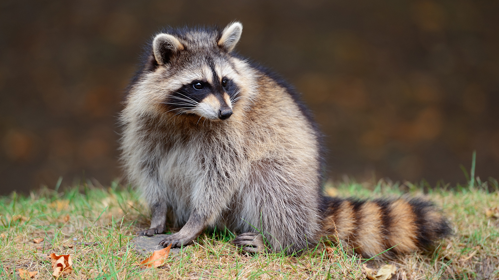

Raccoons
The raccoon (/rəˈkuːn/ or US /ræˈkuːn/, Procyon lotor), sometimes spelled racoon,[3] also known as the common raccoon,[4] North American raccoon,[5] northern raccoon[6] and colloquially as coon,[7] is a medium-sized mammal native to North America. The raccoon is the largest of the procyonid family, having a body length of 40 to 70 cm (16 to 28 in) and a body weight of 3.5 to 9 kg (8 to 20 lb). Its grayish coat mostly consists of dense underfur which insulates it against cold weather. Two of the raccoon's most distinctive features are its extremely dexterous front paws and its facial mask, which are themes in the mythology of several Native American ethnic groups. Raccoons are noted for their intelligence, with studies showing that they are able to remember the solution to tasks for up to three years.[8] The diet of the omnivorous raccoon, which is usually nocturnal, consists of about 40% invertebrates, 33% plant foods, and 27% vertebrates.
The original habitats of the raccoon are deciduous and mixed forests, but due to their adaptability they have extended their range to mountainous areas, coastal marshes, and urban areas, where some homeowners consider them to be pests. As a result of escapes and deliberate introductions in the mid-20th century, raccoons are now also distributed across mainland Europe, Caucasia, and Japan.
Though previously thought to be solitary, there is now evidence that raccoons engage in gender-specific social behavior. Related females often share a common area, while unrelated males live together in groups of up to four animals to maintain their positions against foreign males during the mating season, and other potential invaders. Home range sizes vary anywhere from 3 hectares (7.4 acres) for females in cities to 5,000 hectares (12,000 acres) for males in prairies. After a gestation period of about 65 days, two to five young, known as "kits", are born in spring. The kits are subsequently raised by their mother until dispersal in late fall. Although captive raccoons have been known to live over 20 years, their life expectancy in the wild is only 1.8 to 3.1 years. In many areas, hunting and vehicular injury are the two most common causes of death.
Etymology
The word "raccoon" was adopted into English from the native Powhatan term, as used in the Virginia Colony. It was recorded on Captain John Smith's list of Powhatan words as aroughcun, and on that of William Strachey as arathkone.[10] It has also been identified as a Proto-Algonquian root *ahrah-koon-em, meaning "[the] one who rubs, scrubs and scratches with its hands".[11] Similarly, Spanish colonists adopted the Spanish word mapache from the Nahuatl mapachitli of the Aztecs, meaning "[the] one who takes everything in its hands".[12] In many languages, the raccoon is named for its characteristic dousing behavior in conjunction with that language's term for bear, for example Waschbär in German, orsetto lavatore in Italian, mosómedve in Hungarian and araiguma (アライグマ) in Japanese. In French and European Portuguese, the washing behavior is combined with these languages' term for rat, yielding, respectively, raton laveur and ratão-lavadeiro. The raccoon's scientific name, Procyon lotor, is neo-Latin, meaning "before-dog washer", with lotor Latin for "washer" and Procyon Latinized Greek from προ-, "before" and κύων, "dog". The colloquial abbreviation coon is used in words like coonskin for fur clothing and in phrases like old coon as a self-designation of trappers.[13] In the 1830s, the U.S. Whig Party used the raccoon as an emblem, causing them to be pejoratively known as 'coons' by their political opponents, who saw them as too sympathetic to African-Americans. Soon after that it became an ethnic slur,[14] especially in use between 1880 and 1920 (see coon song), and the term is still considered offensive.[15]